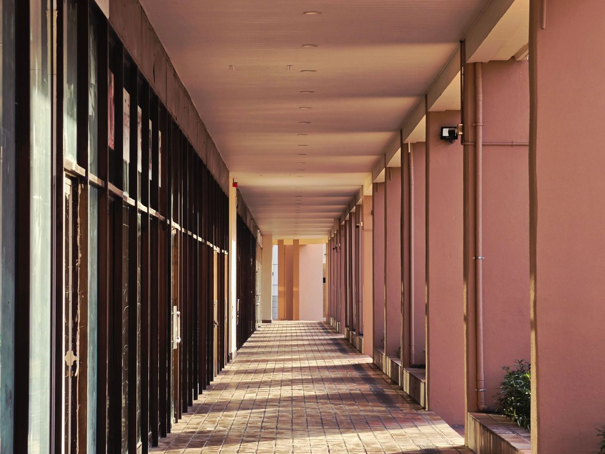
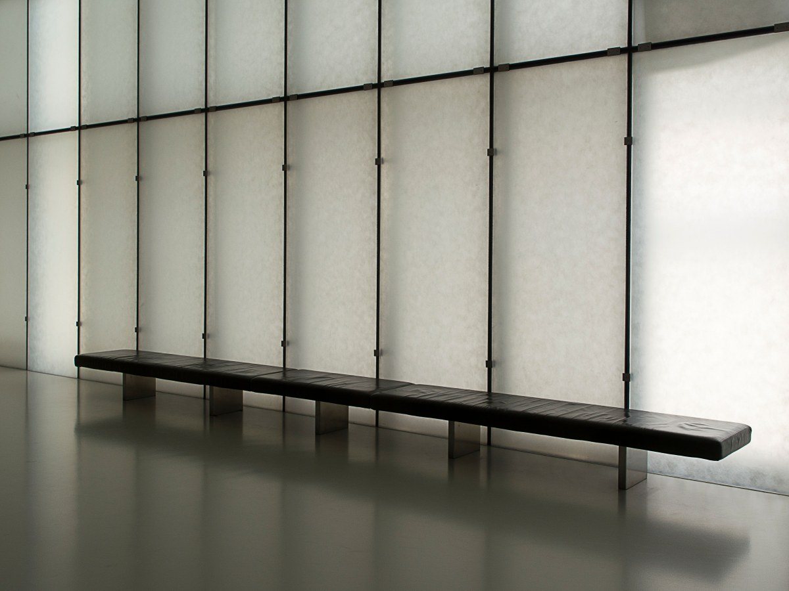
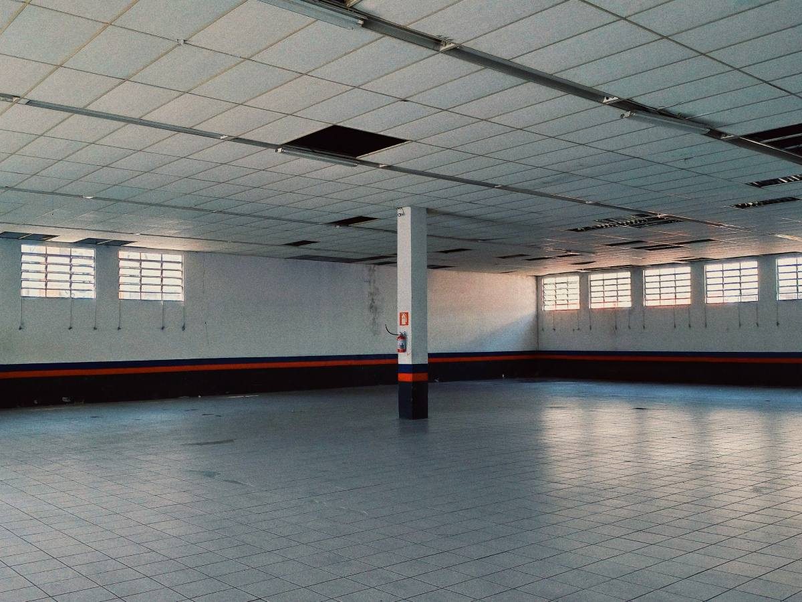
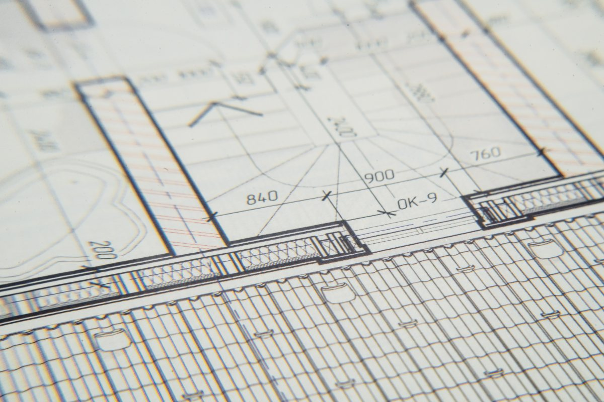
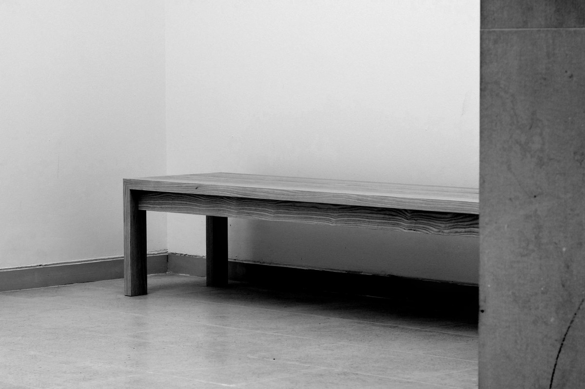

Maipú · Av. Los Pajaritos 1948
¿Hay local disponible?
City Point, frente a la Plaza de Armas: 169 reseñas y ninguna página que lo diga.
- 169reseñas en Google
- 2pasos del metro y de la Plaza de Armas
- 3locales de ejemplo en esta propuesta
- 0páginas: no hay dónde ver los locales ni el horario
Para el que quiere poner un negocio
Local disponible
18 m²
Pasillo central
De paso obligado entre las dos entradas.
- Cortina metálica
- Sin bodega
- Servicios y comida
42 m²
Frente a la entrada
Vitrina larga hacia Los Pajaritos.
- Baño propio
- Bodega
- Tienda
9 m²
Isla del pasillo
Para algo chico que se vea desde lejos.
- Sin bodega
- Enchufe
- Accesorios
Cómo se postula
- Llamas a la administración y dices qué rubro es.
- Te muestran el local y quedan las medidas por escrito.
- Las condiciones se conversan ahí: acá no se prometen.
Los tres locales son una propuesta de CristalWeb para mostrar el formato: los reales los publica la administración.
Un local vacío no se arrienda solo.
Para el que viene a comprar
El centro por dentro
-

Pasillo
De paso obligado
Entre las dos entradas.
-
Vitrinas
A la calle
Las que se ven desde Los Pajaritos.
-
Escaleras
Dos niveles
Se sube y se baja por el centro.
-

Bancas
Para esperar
Mientras el otro compra.
-
Señalética
Para ubicarse
Los carteles que dicen dónde es.
-

Locales
Chicos y grandes
Desde una isla hasta una tienda.
Su web, cuando existía, hablaba de dos multitiendas, un supermercado y un centro médico. No se nombra ningún local: la lista real la tiene la administración.
Ciento sesenta y nueve reseñas, y el visitante no tiene dónde ver qué hay ni hasta qué hora.
Google, al 27-08-2026
El centro
Pasillos, vitrinas y letreros


Fotos de referencia: ninguna es del centro comercial.
Dónde está
Av. Los Pajaritos 1948
- Teléfono
- (2) 2856 4300
- Comuna
- Maipú, frente a la Plaza de Armas
- Horario
- Lo fija cada local: falta publicarlo
El teléfono es fijo: no hay WhatsApp confirmado, así que acá no se promete uno.
Av. Los Pajaritos 1948 Abrir en Google Maps
Para la administración
Qué es real y qué falta
Lo verificado
La dirección, el fijo y las 169 reseñas. Y que citypoint.cl NO existe en NIC ni resuelve, aunque Google todavía lo muestre, al 16-09-2026.
Lo de ejemplo
Los tres locales, sus metros, los rubros y todas las fotos.
Lo que falta
Dos listas que hoy no están en ninguna parte: los locales disponibles y el horario del centro.